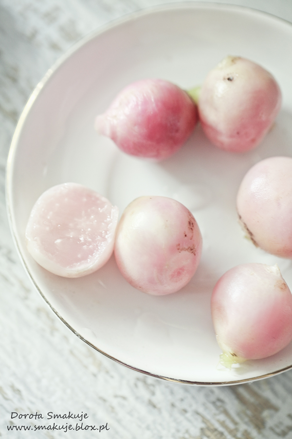
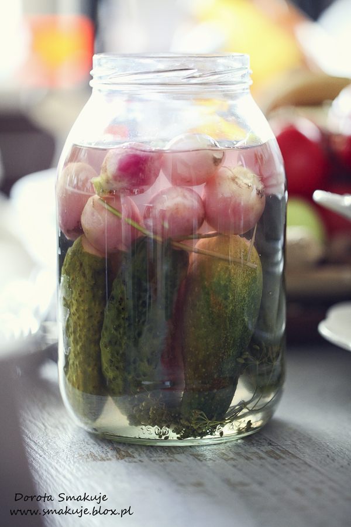
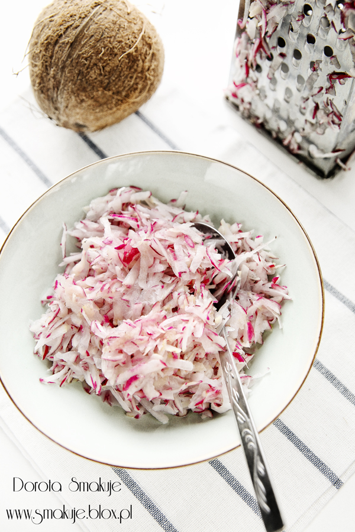
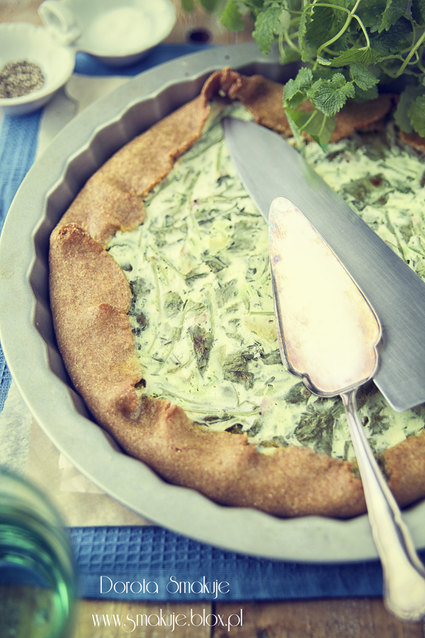
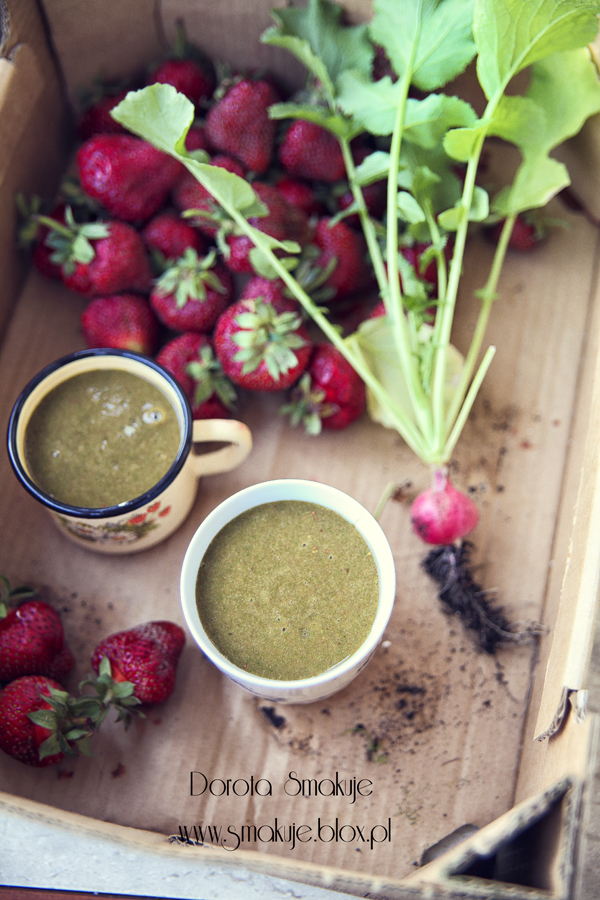

Te Małosolne rzodkiewki to był mój eksperyment – nastawiając ogórki małosolne dorzuciłam do słoika kilka rzodkiewek, które smętnie leżały na talerzyku, lekko już obeschnięte i od tej pory bardzo często powtarzam ten proceder.
Rzodkiewki tracą intensywnie różowy kolor na wierzchu za to w środku fajnie się zabarwiają i nasiąkają słoną wodą zalewy o smaku kopru i czosnku – myślę że to bardzo ciekawa odmiana czy to do podania w sałatkach czy zwyczajnie jako słona przekąska.
W taki upał jak dziś wystarczy im jeden dzień (tak jak ogórkom) by były idealne, w chłodne dni mogą się zasalać do 2 dni.
Składniki na Małosolne rzodkiewki:
pół kg ogórków gruntowych
pęczek rzodkiewek
koper kwitnący
2-3 ząbki czosnku
1 łyżka soli na litr gorącej wody
Jak zrobić Małosolne rzodkiewki:
W słoikach jako dolna część ustawiamy pionowo obok siebie ogórki którym odcinamy końce.
Dodajemy rzodkiewki oraz koper i przekrojone na pół ząbki czosnku.
Zalewamy gorącą woda w której rozpuściliśmy sól.
Zostawiamy na 1-2 dni do zasolenia.

Zobacz też:
 Surówka z rzodkiewki z mleczkiem kokosowym
 Omlet z natką rzodkiewki i serem camembert
Omlet z natką rzodkiewki i serem camembert
 Tarta serowa z listkami rzodkiewki
 Zielony koktajl z truskawkami i listkami rzodkiewki